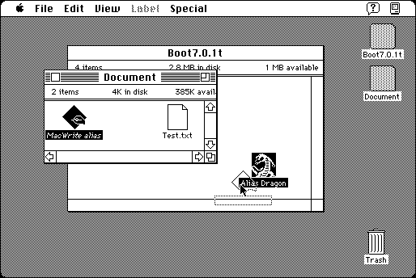

Download
Alias_Dragon_1.3.zip (16K) Alias Dragon 1.3 repackaged into a zipped hfs disk image and checksum file. The disk image can be mounted with Mini vMac.
Alias_Dragon_1.3.sit.bin (16K) Alias Dragon 1.3 in the original format.
copyright: James W. Walker
mod date: Apr 8, 1996
license: Freeware
from url :
James Walker’s Mac Stuff
Fixes problem where “When you rebuild your desktop, an alias to an application on a different volume loses its ability to support drag-and-drop.” The application seemed to run fine and not do any damage, but I couldn't check if it fixes anything, since I wasn't able to recreate the alias problem by rebuilding the desktop in System 7.5.5, System 7.1, or in System 7.0.1.

If you find these downloads useful, please consider helping the Gryphel Project, which hosts them.
Here are the md5 checksums for the downloads, signed with Gryphel Key 5:
--------- GRY SIGNED TEXT --------- 5ade6128678945dd53d4f5cc1f6a3188 Alias_Dragon_1.3.zip 1e2993506b0362f478c5013b430d4dd2 Alias_Dragon_1.3.sit.bin ------- BEGIN GRY SIGNATURE ------- Gry/4Xa8CFcUzxdN/GoS5S4zXlSCUnosKlUs7zXZU++yGTN+gmCjPV1Iofwoi4Xn Vri5PZ1yJ/ll/tLth2Eus5fuboebeDzmspGMnCcqW2k7MOOHAIb70/9ckbOsUvt+ 2PrHTrNsVXNG5YQX+ebD3lSkOJsFPwcvyDKZSyHE4qy7ekdjkDnkr9HicrtYAp40 -------- END GRY SIGNATURE --------